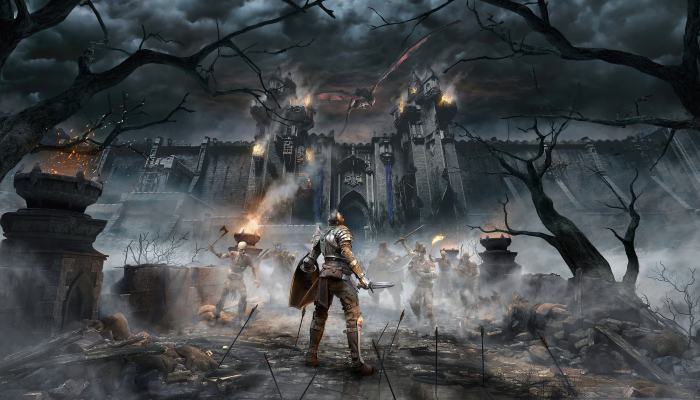
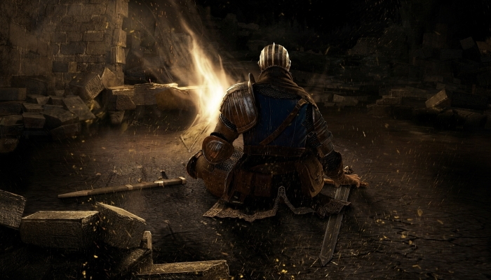
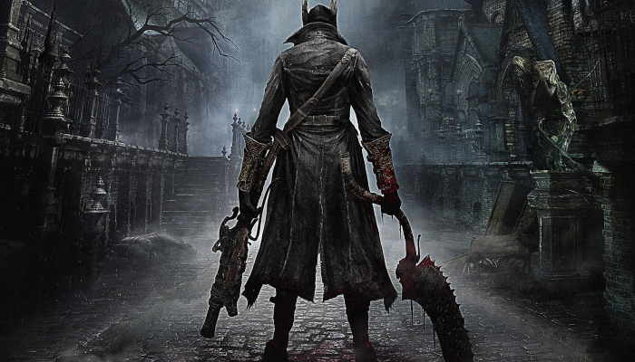
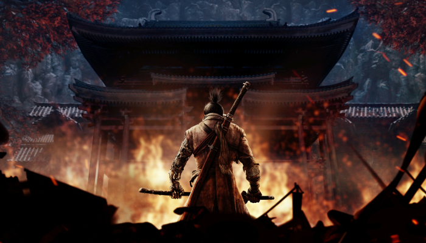
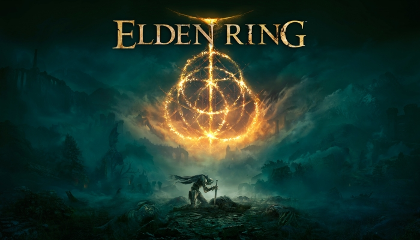

Soulslike video games are a relatively new sub-genre born due to popularity of the Souls series. Soulslike games generally have common elements like high difficulty, high-risk combat with hard-hitting enemies, sparse checkpoints, and enemies dropping souls (or some other resource used for upgrading stats and/or weapons that is lost upon death), but the player has one chance to regain the dropped souls if they can reach the place of their death without dying again.
Demon's souls was released in Japan on February 5th, 2009, and in North America on October 6th of the same year for the PlayStation 3. It was developed by From Software with the help of Sony Japan and published by Atlus. The game was released worldwide on October 6, 2009. Demon's Souls is an action role-playing game where players take on the role of an adventurer, whose gender and appearance are customized at the beginning of the game, exploring the cursed land of Boletaria. The player character is granted a starting character class, which further influences their stats, though they can be altered later in the game and effectively change a player's class combined with a different weapon choice. The world is divided into six areas; the Nexus hub world and five additional worlds subdivided into four areas which each end in a boss encounter. Combat is reliant on timing for weapon strikes and blocks, with different weapon types opening up a variety of combat options and altering the player's movement speed. Most actions drain a stamina meter, with its management forming a core part of combat. By defeating an enemy, the player acquires Souls, which act as both experience points to raise various statistics; and the game's currency for purchasing new weapons, armor and items. As the player invests, the number of souls required increases. Demon's Souls was the first Soulslike game from the FromSoftware company, it was the beginning of a great era for video games.
Dark Souls is a video game developed by From Software. The game has been published on the PlayStation 3 and Xbox 360 by Namco Bandai Games. It was previously developed under the codename Project Dark and is the spiritual successor to Demon's Souls. It also uses an updated variant of said game's engine. Dark Souls has been cited as one of the greatest video games ever made. Critics praised the depth of its combat, intricate level design, and use of flavor text. However, the game's difficulty received mixed reviews, with some criticizing it for being too unforgiving. Dark Souls was released in Japan for the PlayStation 3 on September 22, 2011, in North America for Xbox 360 and PlayStation 3 on October 4, 2011 and in Europe on October 7, 2011. If you are interested in more about the Dark Souls Trilogy, you can return to our Home or Plot section where we greatly expand on the gameplay, multiplayer and obviously the story of the trilogy itself.
Bloodborne is an action RPG from renowned Japanese developer FromSoftware exclusively for the PlayStation 4 system. Bloodborne was released in March 2015. Bloodborne is an action role-playing game played from a third-person perspective and features elements similar to those found in the Souls series of games, particularly Demon's Souls and Dark Souls. Face your fears as you search for answers in the ancient city of Yharnam, now cursed with a strange endemic illness spreading through the streets like wildfire. Danger, death and madness lurk around every corner of this dark and horrific world, and you must discover its darkest secrets in order to survive. The player makes their way through different locations within the decrepit Gothic world of Yharnam while battling varied enemies, including bosses, collecting different types of items that have many uses, interacting with non-player characters, opening up shortcuts, and continuing through the main story. Bloodborne's world of Yharnam is an extensive map full of interconnected areas. At the beginning of the game, the player creates their character, the Hunter. The player determines the basic details of the Hunter; gender, hairstyle, name, skin colour, body shape, voice, and eye colour are some of the options the player can customize. The player also chooses a starting class, known as an "Origin", which provides a basic backstory for the Hunter and sets the player's starting attributes. The player can return to the safe zone, known as the "Hunter's Dream", by interacting with lanterns spread throughout the world of Yharnam. Doing so replenishes health, but repopulates all enemies in the game world, with the exception of bosses and mini-bosses. Lanterns also serve as the game's checkpoints; the player will return to the last activated lantern when they die. Positioned separate from Yharnam, the Hunter's Dream delivers some of the game's basic features to the player. Players may purchase helpful items, such as weapons, clothing and consumables, from the Messengers using Blood Echoes or Insight, level up their character by talking to the Doll, or upgrade their weapons in the workshop, among other things. Unlike Yharnam and all other locations in the game, the Hunter's Dream is considered completely safe as it is the only location in the game not to feature enemies.
Sekiro: Shadows Die Twice is an action-adventure game played from a third-person view. Developed by FromSoftware and published by Activision. Directed by Hidetaka Miyazaki, it released on March 22, 2019. Set in the closing years of the Sengoku period, SEKIRO: SHADOWS DIE TWICE depicts a withered, yet vivid world spawned from a reinterpretation of Japanese-inspired aesthetic, where the battle unfolds for a solitary shinobi, bound by the code to protect his master. Compared to FromSoftware's Souls series, the game features fewer role-playing elements, lacking character creation and the ability to level up a variety of stats, as well as having no multiplayer elements. It does, however, include gear upgrading, a skill tree, and limited ability customization. Rather than attacking to whittle an enemy's health points, combat in Sekiro revolves around using a katana to attack their posture and balance instead, which eventually leads to an opening that allows for a single killing blow. Something unique and new in sekiro is the ability to deflect, which you will use a lot in your game The game also features stealth elements, allowing players to instantly eliminate some enemies if they can get in range undetected. In addition, the player character can use various tools to assist with combat and exploration, such as a grappling hook. If the player character dies, they have the option of being revived on the spot if they have resurrection power, which is restored by defeating enemies, instead of respawning at earlier checkpoints.
Elden Ring is a dark fantasy RPG that lets you play one of the descendants of the Tarnished. An outcast, you must enter the Lands Between to try to gain re-admittance to the society there as an Elden Lord. To do that, you must reveal the mystery of the fabled Elden Ring. Your adventures in the Lands Between will teem with threats and brim with unknown. Elden Ring was release on February 25 2022. Elden Ring is an action role-playing game played in a third-person perspective with gameplay focusing on combat and exploration; it features elements similar to those found in other games developed by FromSoftware, such as the Souls series, Bloodborne, and Sekiro. Set in an open world, players are allowed to freely explore the Lands Between and its six main areas, featuring locations such as castles, caves, and catacombs. These main areas are explorable using the character's mount, Torrent, as the primary mode of transportation, along with the ability to fast travel outside of combat. Throughout the game, players encounter non-player characters (NPCs) and enemies alike, including the demigods who rule each main area and serve as the game's main bosses. Combat in Elden Ring relies heavily on character-building elements found in previous Souls games and related intellectual properties, such as calculated and close-ranged melee-based combat with the use of skills, magic abilities, as well as blocking and dodging mechanics. Elden Ring introduces mounted combat and a stealth system, these features are expected to encourage players in strategizing their combat approach with each unique enemy they encounter. The game makes use of a player character stamina bar, although its overall influence over combat was reduced compared to previous FromSoftware games that utilized it. Players are able to discover different skills through exploration or as rewards from combat. These skills are interchangeable with a large variety of weapons which, alongside equipment, magic abilities, and items players can craft using materials found within the world, can be used to customize the player character. The game also features summoning mechanics, where players can summon a large variety of collectible spirits hidden throughout the game's world map, including some previously defeated enemies, as allies to assist them in certain battles. Similar to the Souls series, the game's multiplayer system allows other players to be summoned for both cooperative and player versus player (PvP) play.
